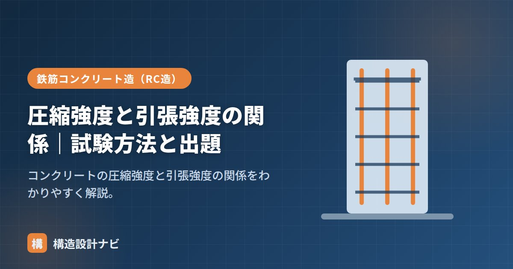

圧縮強度と引張強度の関係｜試験方法と出題

コンクリートの圧縮強度と引張強度の関係とは、「コンクリートは圧縮に強く引張に弱い（引張強度は圧縮強度の約1/10）」という材料特性のことです。この性質は鉄筋コンクリート（RC）造が成立する根本の理由であり、構造設計の前提として、建築士試験でも繰り返し出題されるポイントです。この記事では、両者の関係、なぜ引張に弱いのか、試験方法の違い、出題ポイントを整理します。
- コンクリートの引張強度は圧縮強度のおよそ1/10。
- 圧縮は円柱供試体の圧縮試験、引張は割裂引張試験で求める。
- 引張に弱い性質を鉄筋で補うのがRC造の基本原理。
圧縮と引張の関係
コンクリートは圧縮に強く引張に弱い材料で、引張強度は圧縮強度のおよそ1/10です。だからコンクリート単体では引張・曲げに使えず、引張を鉄筋に負担させる鉄筋コンクリート（RC）が用いられます。
簡単な数値例で確認しましょう。圧縮強度24N/mm²の普通コンクリートなら、引張強度はその約1/10の2.4N/mm²程度しかありません。梁が曲げを受けると断面の引張側には数N/mm²の引張応力が容易に生じるため、コンクリートだけではすぐにひび割れてしまいます。そこで引張側に鉄筋を配置し、ひび割れ後の引張力はすべて鉄筋に負担させる、というのがRC造の設計の考え方です。許容応力度計算でも、コンクリートの引張抵抗は原則として無視します。
なぜ引張に弱いのか
コンクリートは、セメントペーストと骨材からなる不均質な材料で、内部には微細な空隙やひび割れ、骨材とペーストの境界（遷移帯）といった弱点が無数に存在します。圧縮ではこれらの欠陥が押しつぶされる方向に働くため耐力を発揮できますが、引張では欠陥の先端に応力が集中し、小さな力でひび割れが進展してしまいます。これが「圧縮に強く引張に弱い」理由です。石やレンガなど、他の脆性材料にも共通する性質です。
試験方法の違い
| 圧縮強度 | 引張強度 | |
|---|---|---|
| 試験 | 円柱供試体を立てて圧縮 | 割裂引張試験（円柱を横にして圧縮） |
| 大きさ | 大きい | 圧縮の約1/10 |
引張強度を直接引っ張って測るのは、つかみ部で壊れやすく難しいため、円柱供試体を横に寝かせて上下から線状に圧縮する割裂引張試験が用いられます。このとき供試体内部の直径面には均一な引張応力が生じ、供試体は縦に割裂して壊れます。「引張試験なのに圧縮力を加える」点が試験で問われやすいところです。
建築士での出題ポイント
- 「コンクリートの引張強度は圧縮強度の約1/10」。
- 「引張に弱いため鉄筋で補う」のがRC造の原理。
- 強度は水セメント比で決まる（小さいほど高強度）。
- 引張強度は割裂引張試験で求める。
Q. 曲げ強度は圧縮・引張とどう違うのですか？
曲げ強度は、角柱供試体に曲げを加えて求める強度で、引張強度よりやや大きく、圧縮強度よりはるかに小さい値になります。舗装コンクリートなどで用いられる指標ですが、建築のRC造では「圧縮はコンクリート、引張は鉄筋」と役割分担させるため、設計上は圧縮強度が基準になります。
配筋検査で若手から「コンクリートも多少は引張を負担できるのでは」と聞かれることがありますが、梁・柱の許容応力度計算では原則無視するのが実務の割り切りです。一方でスラブや壁の温度ひび割れ制御筋の検討では引張強度を無視できず、照査の目的によって扱いを切り替える必要があります。
「引張強度」「圧縮強度と水セメント比」「コンクリートと鉄筋の関係」をどうぞ。
圧縮と引張の破壊の違い（図解）
試験方法の違い
| 圧縮強度試験 | 割裂引張試験 | |
|---|---|---|
| 供試体の置き方 | 円柱を立てて載荷 | 円柱を横に寝かせて載荷 |
| 荷重のかけ方 | 上下から圧縮 | 側面の帯状の範囲を圧縮 |
| 破壊の様子 | 斜めのひび割れ・砕ける | 載荷線に沿って縦に割れる |
| 求める式 | σ ＝ P / A | σt ＝ 2P /（π·d·L） |
| 規格 | JIS A 1108 | JIS A 1113 |
割裂引張試験は、円柱を横倒しにして押しつぶすと載荷方向と直角に引張応力が生じるという性質を利用しています。直接コンクリートを引っ張るのは、つかむ部分で先に壊れてしまい難しいため、この間接的な方法が標準になっています。
- 引張強度は圧縮強度の約1/10（1/10〜1/13程度）
- 圧縮強度が高くなるほど、引張強度の比率はやや小さくなる傾向
- 割裂引張試験は円柱を横に寝かせる（立てるのは圧縮）
- 設計では、コンクリートの引張抵抗は原則として無視する
よくある質問
Q1. なぜ設計でコンクリートの引張強度を無視するのですか？
値が小さくばらつきも大きいため、安全側に見て考慮しないのが原則だからです。引張強度は圧縮の1/10程度しかなく、しかも微細な欠陥の分布に左右されるため、確実に期待できる値とはいえません。曲げを受ける梁では、引張側のコンクリートは早期にひび割れて力を負担しなくなると考え、すべて鉄筋に負担させます。これが鉄筋コンクリートの基本的な設計思想です。
Q2. 引張強度を計算で推定する式はありますか？
あります。一般に、引張強度は圧縮強度の平方根に比例する形の推定式が用いられます。日本建築学会の規準などでは、コンクリートの割裂引張強度を圧縮強度から推定する式が示されており、ひび割れ幅の検討やせん断耐力の算定などで使われます。ただし推定値であるため、重要な検討では実際に試験を行って確認します。
Q3. 曲げ強度は引張強度と同じですか？
異なります。曲げ強度（曲げ引張強度）は、角柱供試体を曲げて求める値で、割裂引張強度より2〜3割大きく出るのが一般的です。これは曲げでは断面の縁のごく一部だけが最大応力を受けるため、内部欠陥に当たる確率が低くなるためです。無筋コンクリートの舗装など、曲げが支配的な構造物では曲げ強度が設計の基準に使われます。
まとめ
- 引張強度は圧縮強度の約1/10。コンクリートは引張に弱い。
- 内部の微細な欠陥に応力が集中するため、引張ではひび割れが進展しやすい。
- 圧縮は円柱圧縮、引張は割裂引張試験（横にして圧縮）で求める。
- 「引張は鉄筋が負担」がRC造の基本。建築士試験で頻出。